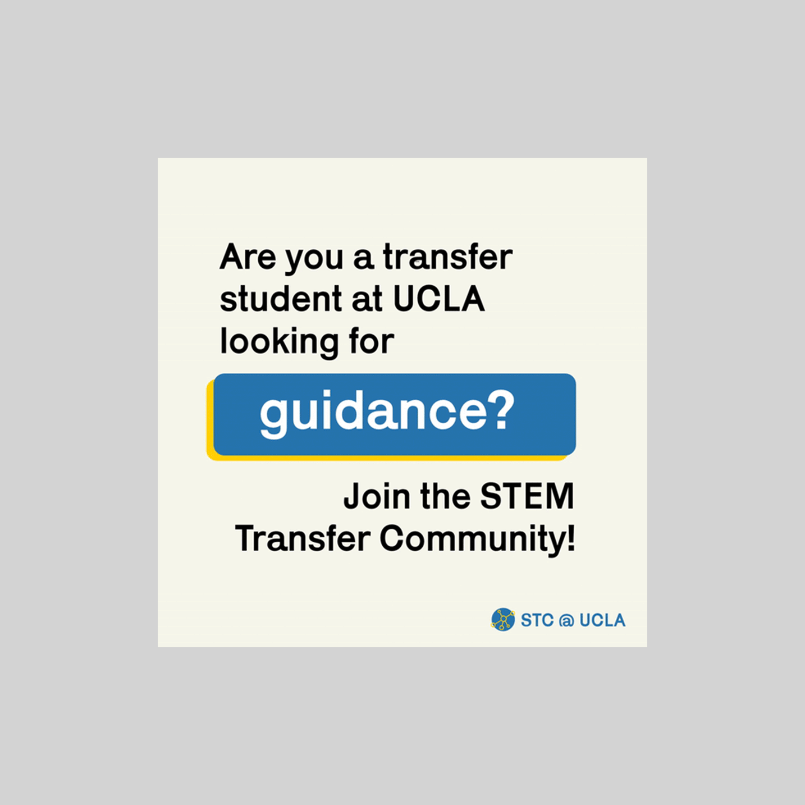
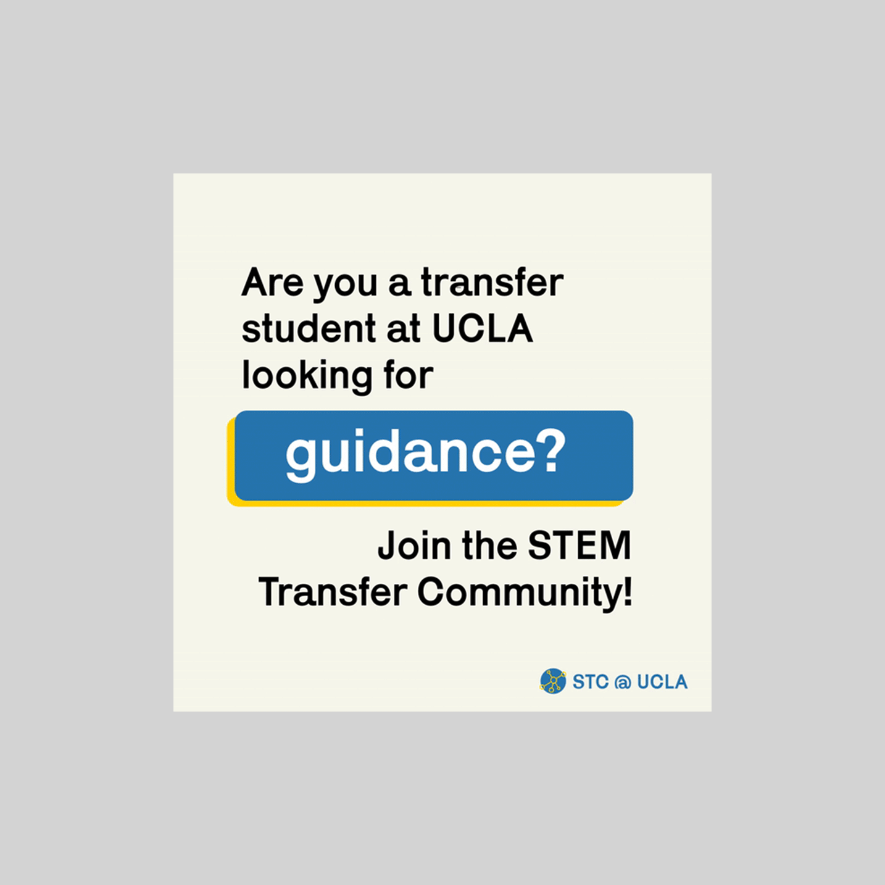

SF-based UX designer and front-end developer interested in creating engaging interactive experiences. Fascinated by aesthetic trend cycles as a means to transcend commerical gimmickry. My Work ↓
User Interface Design
craftili, 2021
goals ↓
craftili is an online marketplace for customizable products. The client’s approach prioritized humanizing online transactions, bridging the gap between creator and consumer. My aim was to design a landing page that explained the platform’s features and goals while maintaining accessibility. This page would be active prior to and during the launch of the platform.
process ↓
Bespoke items are typically associated with affluence and thus exclusivity, so it was important that the design not come across as too cold or luxurious. At the same time, I was aware that the target demographic would be a ‘hip’ crowd whose sensibilities would not be catered to by existing cookie-cutter retailers. With this in mind, I ensured that the design was modern, clean, and neutral. I figured that the featured sellers on the site would be apt appeal to the fringe interests of potential users (the sellers are not pictured in the displays above), and that an understated design would do best for a marketplace-style platform. Because the core concept of the platform is not radically new, my approach to novel appeal relied more on visual tactics. This is why I decided to employ a video background. It is both optically stimulating, and also conveys the company’s emphasis on humanity and craftsmanship. I stitched together a montage of stock photos to send to the client, and then remotely directed the filming process of the actual featured clients. Similarly, I implemented parallax motion on scroll.
note ↓
*I did not develop the website for craftili.

craftili, 2021
goals ↓
craftili is an online marketplace for customizable products. The client’s approach prioritized humanizing online transactions, bridging the gap between creator and consumer. My aim was to design a landing page that explained the platform’s features and goals while maintaining accessibility. This page would be active prior to and during the launch of the platform.
process ↓
Bespoke items are typically associated with affluence and thus exclusivity, so it was important that the design not come across as too cold or luxurious. At the same time, I was aware that the target demographic would be a ‘hip’ crowd whose sensibilities would not be catered to by existing cookie-cutter retailers. With this in mind, I ensured that the design was modern, clean, and neutral. I figured that the featured sellers on the site would be apt appeal to the fringe interests of potential users (the sellers are not pictured in the displays above), and that an understated design would do best for a marketplace-style platform. Because the core concept of the platform is not radically new, my approach to novel appeal relied more on visual tactics. This is why I decided to employ a video background. It is both optically stimulating, and also conveys the company’s emphasis on humanity and craftsmanship. I stitched together a montage of stock photos to send to the client, and then remotely directed the filming process of the actual featured clients. Similarly, I implemented parallax motion on scroll.
note ↓
*I did not develop the website for craftili.
 

Design
Design
Design + Development